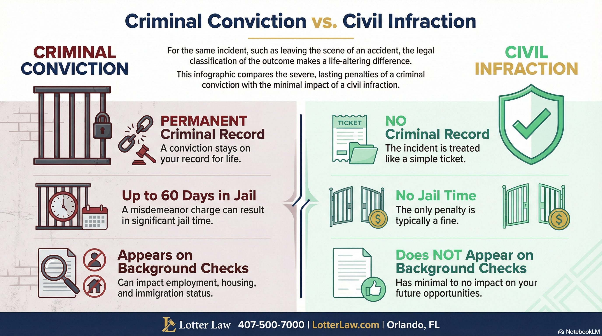

Criminal Charge Dropped to Civil Infraction: How We Protected Our Client's Future
When our client came to us, he wasn't just worried about a traffic ticket. As a legal immigrant, he was terrified that a criminal conviction could affect his ability to stay in the United States. The stakes couldn't have been higher.
He'd been charged with Leaving the Scene of an Accident under Florida Statute 316.061 - a second-degree misdemeanor that carries up to 60 days in jail and creates a permanent criminal record.
We held the State's feet to the fire. The result? The criminal charge was dropped entirely. The case was resolved with a non-moving civil infraction - no criminal record, no jail, and our client went home to his family with his future intact.
What Is Leave Scene of Accident?
Under Florida Statute 316.061, if you're involved in a crash that causes property damage and you leave without stopping to provide your information, you can be charged criminally.
The penalties depend on the circumstances:
- Property damage only (over $50): Second-degree misdemeanor - up to 60 days jail, $500 fine
- With injuries: Escalates to felony charges
- With death: First-degree felony
But here's what many people don't realize: the State must prove you knew you were in an accident. That "knowledge" element is critical - and it's where many Leave Scene cases fall apart.
Criminal vs. Civil: Why the Distinction Matters
There's a massive difference between a criminal conviction and a civil infraction - even if both involve the same underlying incident.
Criminal Conviction vs. Civil Infraction
| Factor | Criminal Conviction | Civil Infraction |
|---|---|---|
| Criminal record | Yes - permanent | No |
| Potential jail time | Up to 60 days | None |
| Background checks | Shows up | Doesn't show |
| Employment impact | Significant | Minimal |
| Resolution | Court appearance required | Pay fine |

For our client, who was worried about how a criminal record might affect his immigration status, this distinction was everything.
How We Won This Case
When our client hired us, the State was pursuing the criminal charge. They believed they had a straightforward case: an accident occurred, there was property damage, and our client left the scene.
We didn't accept their narrative.
Defense Strategy
- Challenging the "knowledge" element - Florida law requires the State to prove the driver knew they were involved in an accident. This is an essential element they must prove beyond a reasonable doubt. If you genuinely didn't know contact occurred, you're not guilty.
- Holding the State to their burden - We made clear we were prepared to take this case to trial. The prosecutor would need to prove every element - not just that an accident happened, but that our client knowingly left.
Faced with the prospect of trial on a case with real evidentiary issues, the State agreed to resolve the matter as a non-moving civil infraction.
Our client paid a fine. That's it. No criminal record. No jail. No lasting consequences.
The Takeaway
If you've been charged with Leaving the Scene of an Accident in Florida, don't assume you have to plead guilty. The State has to prove you knew you were involved in an accident. That's not always easy to prove.
And even if the evidence is strong, an experienced attorney can often negotiate a resolution that avoids the most serious consequences - like reducing a criminal charge to a civil infraction.
Our client came to us facing a criminal charge that terrified him. He left with no criminal record and his future protected.
That's what fighting back looks like.
Every case is different. This result doesn't guarantee the same outcome in your case. But it shows what's possible when you have an attorney willing to challenge the State's case rather than just accept it.
Facing a Leave Scene Charge in Orlando?
Don't plead guilty without understanding your options. The "knowledge" element is critical - and it's not always easy for the State to prove. Call for a free consultation.
Legal References
Related Articles
Hit and Run: The Corpus Delicti Defense
Why the State can't just use your statement to convict you.
BlogDWLSR vs. No Valid License: One Is a Crime, One Isn't
The critical difference between criminal and civil license charges.
Need Legal Help?
If you're facing criminal charges in Central Florida, an experienced defense attorney can make the difference. Get a free consultation to discuss your case.
Contact Lotter Law at 407-500-7000 for a free consultation.

Jeff Lotter
Criminal Defense Attorney | Former State Trooper
Jeff Lotter is an Orlando criminal defense attorney and former Florida Highway Patrol trooper. He uses his law enforcement background to build stronger defenses for clients facing criminal charges.